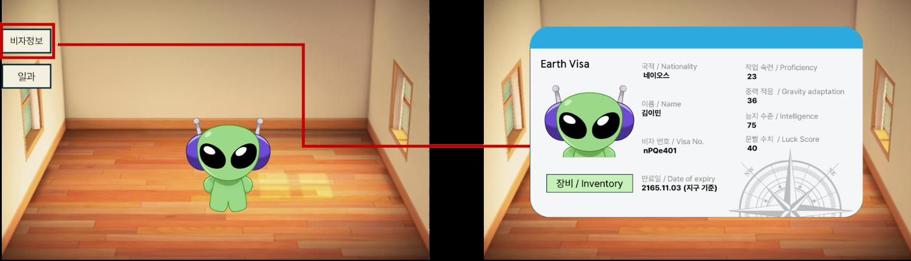

성장 시스템_캐릭터 스테이터스창
- 외계인 노동자의 지구 체류 서류를 모티프로, 캐릭터 정보를 비자 카드 형태로 구성했다.
- 세계관에 맞는 외형 안에서 현재 스탯과 스킬 관리 기능을 함께 확인하도록 설계했다.
진입과 닫기

메인 화면의 비자정보 버튼으로 열고, 카드 오른쪽 위의 닫기 버튼으로 닫는다.
화면 구성
| IDX | 요소 | 표시 및 동작 |
|---|---|---|
| 1 | 캐릭터 이미지 | 김이민의 얼굴을 표시한다. |
| 2 | 비자 정보 | 국적, 이름, 비자 번호, 만료일을 표시한다. 세계관을 전달하는 정보이며 성장 수치와 구분한다. |
| 3 | 성장 스탯 | 작업 숙련, 중력 적응, 지능, 운빨을 아이콘, 이름, 현재 값 / 100으로 표시한다. |
| 4 | 워크 모듈 | 버튼을 누르면 스킬의 현재 성능을 확인하고 업그레이드하는 창을 연다. |
| 5 | 비자 장식 | 바코드, 기계 판독 줄, 도장 등 꾸밈 요소는 글자 가독성을 위해 가장자리 쪽에 둔다. |
- 스탯 아이콘은 일과 선택, 결과 화면에서도 같은 모양을 사용한다.
- 화면이 바뀌어도 같은 능력치를 바로 알아볼 수 있도록 한다.